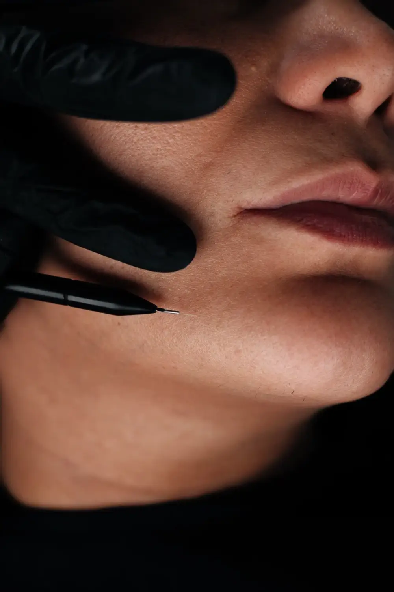
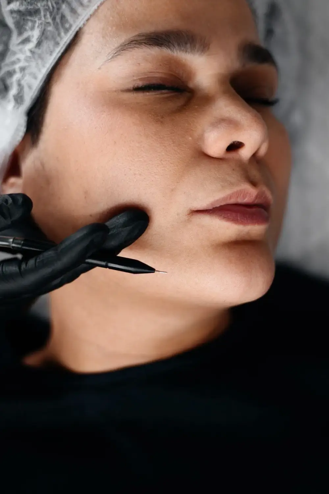

ElektrolyseElectrolysis
Fra 450 krFrom 450 kr
Elektrolyse i Stavanger og SandnesElectrolysis in Stavanger and Sandnes
En radikal metode for fjerning av hår som passer for alle hudtyper og alle hårtyper.A radical method of hair removal that suits all skin types and all hair types.
- Fra 450 krFrom 450 NOK
- Prøvebehandling 30 min30 min trial session
- Alle hud- og hårtyperAll skin and hair types
Hva er elektrolyse?
Dette er en radikal metode for fjerning av hår. Under elektrolyse virker en elektrisk strøm på hårroten. Prosedyren utføres med en engangsnål med nødvendig diameter. Nålen føres inn til hårets dybde, og deretter tilføres en elektrisk strøm med lav effekt i en kort periode, men tilstrekkelig til at det skjer koagulasjon eller en kjemisk reaksjon.
(Enkelt sagt: håret brennes bort.)
What is electrolysis?
It is a radical method of hair removal. During electrolysis, an electric current acts on the hair root. The procedure is performed with a single-use (disposable) needle of the required diameter. The needle is inserted to the depth of the hair follicle, and then a low-power electric current is applied for a short period – enough to cause coagulation or a chemical reaction.
(Put simply: the hair is burned away.)
PrislistePrice list
Elektrolyse (prøvebehandling)Electrolysis (trial treatment)
Anbefales for deg som er ny til elektrolyse. Inkluderer introduksjon til prosedyren og en kort behandling, slik at du kan vurdere komfort, smertetoleranse og behov for bedøvelse før et behandlingskurs.Recommended for those new to electrolysis. Includes an introduction to the procedure and a short treatment so you can assess comfort, pain tolerance, and the need for anesthesia before a full course.

Elektrolyse (15 min.)Electrolysis (15 min.)
Moderne og pålitelig metode for fjerning av uønsket hår med langvarig resultat, egnet for alle hud- og hårtyper.Modern and reliable method for removing unwanted hair with long-lasting results, suitable for all skin and hair types.
Elektrolyse (30 min.)Electrolysis (30 min.)
Effektiv behandling for uønsket hår med individuell tilpasning, som gir langvarige resultater for alle hud- og hårtyper.Effective treatment for unwanted hair with individual adaptation, providing long-lasting results for all skin and hair types.
Elektrolyse (45 min.)Electrolysis (45 min.)
Utvidet behandlingstid for større områder eller tettere hårvekst, med fokus på komfort og varig resultat.Extended treatment time for larger areas or denser hair growth, focusing on comfort and lasting results.

Elektrolyse (60 min.)Electrolysis (60 min.)
Dypere behandlingsøkt for mer omfattende arbeid, egnet for alle hud- og hårtyper med langvarig effekt.Deeper treatment session for more extensive work, suitable for all skin and hair types with long-lasting effect.
Elektrolyse (2 timer)Electrolysis (2 hours)
Lang økt for store behandlingsområder eller intensive forløp, med moderne metode som gir varige resultater.Long session for large treatment areas or intensive courses, using modern methods for lasting results.
Ofte stilte spørsmålFrequently asked questions
Er elektrolyse smertefullt?Is electrolysis painful?
De fleste opplever en mild prikkende følelse. Opplevelsen varierer fra person til person og mellom områder. Vi bruker moderne utstyr som minimerer ubehag, og en prøvebehandling lar deg vurdere komforten først.
Most people feel a mild prickling sensation. It varies from person to person and between areas. We use modern equipment that minimises discomfort, and a trial session lets you judge the comfort first.
Hvor mange behandlinger trenger jeg?How many treatments do I need?
Merk: elektrolyse måles, i motsetning til laserhårfjerning, ikke i antall behandlinger, men i tid!
1,5–4 år til fullstendig fjerning for alltid. I løpet av det første året fjerner vi 70–80 % av håret, innen 2–3 år de resterende 25–15 %, og innen 4 år helt til det siste håret.
Elektrolyse regnes i gjennomganger (pass), det vil si at et område er behandlet fullstendig. For eksempel kan bikinilinjen ta omtrent 11–13 timer. Dette fordeles på 4 besøk, og for kunden kan det virke som 4 behandlinger, men i virkeligheten er det bare én full gjennomgang av hele området.
Den viktigste grunnen til at vi ikke kan fjerne håret for alltid på én gjennomgang, og som avgjør hvor lenge et elektrolysekurs varer, er kenogen-fasen: fasen med «tom» hårsekk, når hårsekken for øyeblikket ikke produserer hår fordi forholdene ikke er gunstige. Ugunstige forhold kan være stress, dårlig kosthold, for lite vann, kulde, mangel på vitaminer og mye annet.
Håret vokser syklisk, og syklusen er ikke mulig uten kenogen-fasen. Derfor kan kurset vare opptil 4 år, til det aller siste håret.
Alt er individuelt! Det avhenger blant annet av hvilken hårfjerningsmetode du brukte før du startet elektrolyse.
Please note: unlike laser hair removal, electrolysis is measured not in the number of treatments but in time!
1.5–4 years to complete, permanent removal. In the first year we remove 70–80% of the hair, within 2–3 years the remaining 25–15%, and within 4 years right down to the last hair.
Electrolysis is counted in passes, meaning an area has been treated completely. For example, the bikini line can take about 11–13 hours. This is split into 4 visits, and to the client it may seem like 4 treatments, but in reality it is only one full pass over the whole area.
The main reason we cannot remove hair permanently in a single pass, and what decides how long an electrolysis course takes, is the kenogen phase (the "empty follicle" phase): the phase when the follicle is not currently producing hair because conditions are not favourable. Unfavourable conditions can be stress, poor diet, too little water, cold, a lack of vitamins and much more.
Hair grows in cycles, and the cycle is not possible without the kenogen phase. That is why a course can last up to 4 years, until the very last hair.
Everything is individual! It depends, among other things, on which hair removal method you used before starting electrolysis.
Er resultatet permanent?Is the result permanent?
Ja. Elektrolyse regnes som en metode for permanent hårfjerning. Hvert hår behandles enkeltvis, og resultatet blir varig etter fullført behandlingsserie.
Yes. Electrolysis is considered a method of permanent hair removal. Each hair is treated individually and the result is lasting after a completed course.
Passer det for alle hud- og hårtyper?Does it suit all skin and hair types?
Ja, metoden er egnet for alle hud- og hårtyper, også lyse og tynne hår.
Yes, the method suits all skin and hair types, including light and fine hair.
Hva koster elektrolyse?What does electrolysis cost?
Fra 450 kr (15 min) til 2 500 kr (2 timer). Se prislisten på siden.
From 450 NOK (15 min) to 2,500 NOK (2 hours). See the price list on this page.
Klar for en time?Ready to book?
Velg tid som passer deg – det tar under ett minutt.Pick a time that suits you – it takes under a minute.